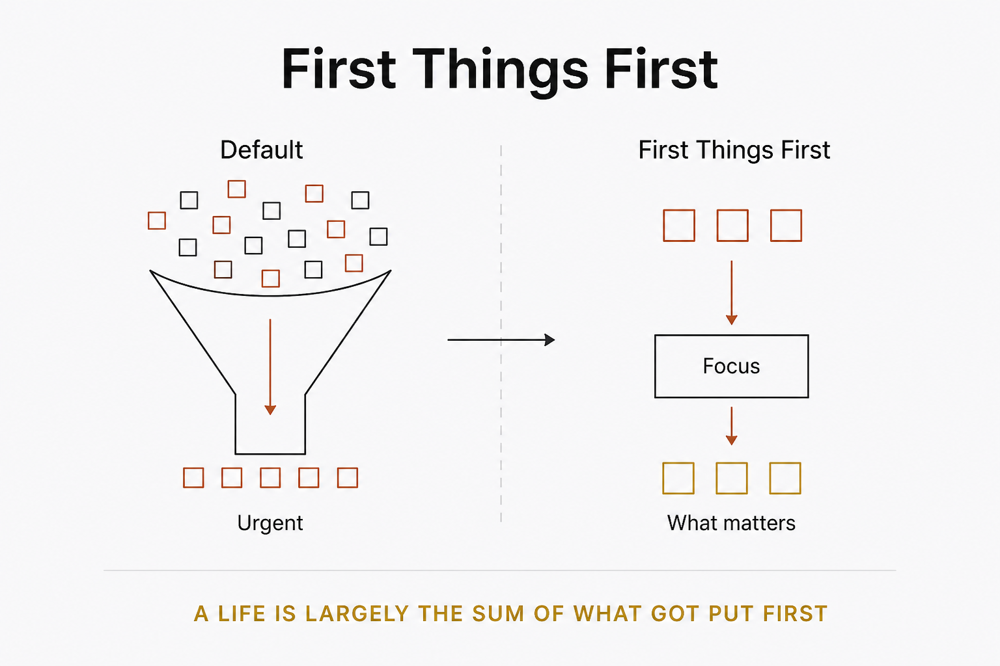

Living principles
Order beats effort: put the few things that matter most before the many that merely feel urgent.

A day fills itself if you let it — with what shouts loudest, arrives latest, or is easiest to finish. First things first is the refusal to let urgency set the order. You decide, before the noise starts, which few things actually matter, and you spend your best hours on those — not on the important-feeling work that is really just reactive. The hard part isn't knowing what matters; it's protecting it from everything that doesn't, precisely when everything else is louder and more immediate. Done for long enough, the principle compounds: a life is largely the sum of what got put first, over and over. Named after Covey's habit, but the discipline is older than the book — do the important thing while it's still only important, before it becomes urgent and you no longer have the choice.